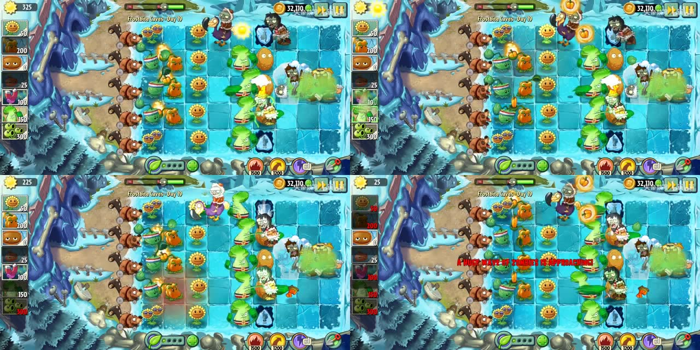
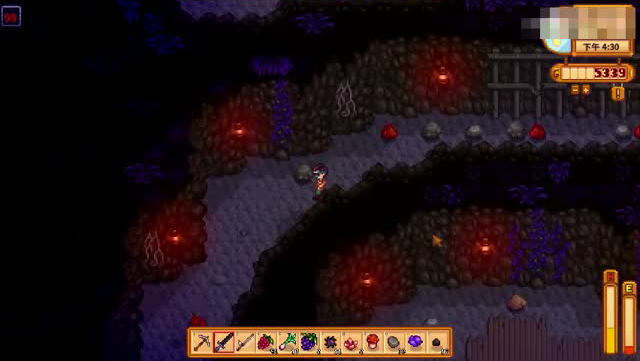
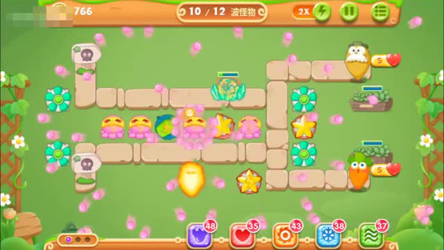
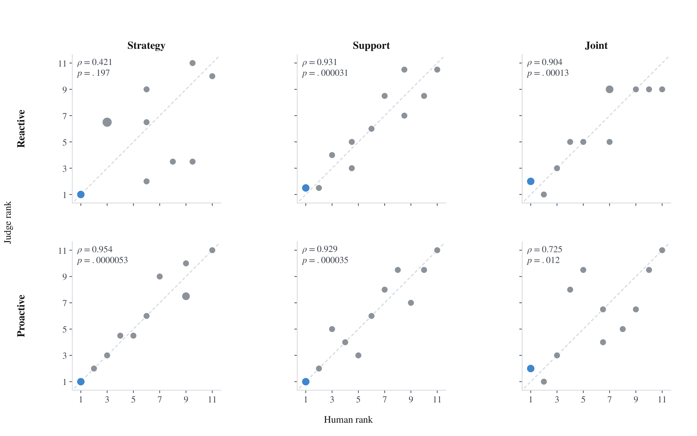

Reactive answering and proactive intervention
CoPlayLearning When to Speak and What to Say as Game Companions
For a game companion, what to say and when to say it are one decision — and for most of a session the right decision is silence. CoPlayBench scores that decision; CoPlayer learns it, and still fails about two thirds of advice questions.
Anonymous manuscript · no code, data or model release is stated in it
The gap
A posed question already tells a model when to speak.
Video benchmarks pose the question, so they score the answer and never the decision to intervene. A model is never penalised for speaking when nothing calls for it — and a companion is not a commentator: it addresses the person playing, and must commit before the next decision.

Grounded in what is on screen
An unprompted line has to concern the player's next decision, not describe the scene.
Supportive of this player, now
Support earns credit only when it is tied to the situation and matches the expected tone.
Delivered while it still matters
A window that passes while the model is still generating counts as missed.
Withheld when silence is better
Required windows cover 7.4% of Bench video time. The rest of the session is quiet.
CoPlayBench
Every score is tied to one annotated event.
Each video is annotated three times over. Three frontier models mark the moments worth attention; events marked by at least two survive, 21,494 down to 15,689; three human annotators then keep only the ones they unanimously accept.
![Two-part diagram. (a) Building CoPlayBench: 2,534 first-person videos from 9 games are annotated independently by Claude-Opus-5.5, GPT-6.1-Sol and Gemini-4-Argon; events whose time spans overlap are retained, 21,494 to 15,689 events. One retained Honor of Kings teamfight shows a player question, a 728 to 732 second pre-event alert window, a reference reply and a must-not item. (b) Evaluation: the reactive track answers from 16 frames of the last 60 seconds and is scored on game, player and time; the proactive track observes every step, and a timeline shows two required windows hit and one missed.](assets/figures/coplaybench-figure2.png)
One retained event
- Game
- Honor of Kings · teamfight · 3 of 3 annotators agree
- Window
- 728–732 s · pre-event alert
- Player asks
- “Can we rush in this time?”
- Reference
- “Hold up! Ult’s still cooling down. Poke from behind the frontline. Let’s not eat tower shots.”
- Must not
- Encourage a point-blank tower dive
- Each event carries a time span, a tier, a speaking window, up to three questions, must-mention points, forbidden statements, a tone, a word limit and a reference reply — all written from information available before the window closes.
- Hidden information stays hidden. Engines annotate the card and board games, but their numerical evaluations are withheld from every evaluated model, which sees only pixels.
- A timing audit shifted 430 windows, dropped 20 events and removed 13 must-mention points. 198 questions (2.2%) still contain a reference reply that refers to the future.
Most of a session is quiet, and that is the point.
A benchmark that poses every question can never test restraint. In CoPlayBench the windows are narrow and rare, so a model that talks constantly scores badly on purpose.
One Honor of Kings session · 16 minutes
7.4%
of Bench video time sits inside a required speaking window. For the other 92.6%, saying nothing is the correct answer — which is why a benchmark that poses every question cannot score a companion.
The pace differs sharply by game. Dou Dizhu needs a reply for 27.0% of its video and leaves a median 4.2 s to speak; Stardew Valley leaves 8 s but its windows cover 0.8%.
Nine games set nine different timing problems: Dou Dizhu needs a reply for 27.0% of its video, Stardew Valley for 0.8%.
| Game | Videos | Hours | Events | Window (s) | Cover (%) |
|---|---|---|---|---|---|
| Honor of Kings | 100 | 26.4 | 923 | 8.0 | 7.0 |
| Dou Dizhu | 100 | 2.4 | 552 | 4.2 | 27.0 |
| Mahjong | 100 | 5.2 | 482 | 6.0 | 12.0 |
| UNO | 99 | 3.8 | 533 | 5.0 | 17.8 |
| Go | 100 | 10.2 | 591 | 4.0 | 5.7 |
| Plants vs. Zombies 2 | 69 | 4.5 | 340 | 8.0 | 15.3 |
| Carrot Fantasy | 126 | 10.3 | 722 | 7.0 | 11.2 |
| Hearthstone | 91 | 15.6 | 751 | 5.0 | 5.5 |
| Stardew Valley | 33 | 19.2 | 259 | 8.0 | 0.8 |
| Total | 818 | 97.7 | 5,153 | 6.0 | 7.4 |
How it is scored
Raw recall rewards talking, so timing is scored against a random speaker.
Two metrics carry the claims. StratEmo credits a reply only when its advice is sound and its support fits the situation. TimingLift is recall minus a random speaker placing the same number of lines over the same stream — so talking more cannot buy it.
Every metric on this page, defined once. Two carry the claims: StratEmo and TimingLift.
| Acronym | Meaning | Acronym | Meaning |
|---|---|---|---|
| GroundF1 | must-mention F1, wrong claims as false positives | StratAcc | advice questions with sound strategy |
| FactAcc | verifiable facts correct | EmoAcc | player emotion recognized |
| SupQual | support score 0–4, rescaled | StratEmo | sound strategy with support ≥3 |
| TTFT | time to first visible token | TTUA | time until useful advice is complete |
| OnTime | advice complete by its deadline (TTUA) | OnTime-F | OnTime under a fixed deadline |
| Violation | reply violates a must-not item | LenOK | reply within the word limit |
| Recall | required windows hit at step time | Recall-S | hit by first-token arrival |
| RandBase | random speaker, same utterance count | TimingLift | Recall minus RandBase |
| SeenRate | required windows with an observed step | Recall-O | recall on observed windows |
| HitStrat | sound strategy in first in-window line | HitSup | support score of that line |
| HitStratEmo | sound strategy and support ≥3 | SpeakRate | lines per minute |
| NoiseRate | outside-window chat, wrong or noise per minute | QuotaOver | quiet-time periods over quota |
Each model's filled dot is its Recall; the open dot below it is that random speaker; the amber bar between them is TimingLift. GPT-5.6-Sol and Doubao-Seed-2.1-Pro reach the same recall, but Doubao speaks over 40% more often. TimingLift is not confound-free: fewer observed frames mean fewer chances to speak.
CoPlayer
One shared supervised model, then two policies whose rewards diverge.
CoPlayer is based on Qwen3.8-27B. Supervision learns reference replies and step-level speak-or-silence decisions from the Train videos, with the vision tower frozen; the memo slot is empty in every supervised target, so memo content is neither supervised nor rewarded. Two GRPO policies then start from that checkpoint and specialise. They share only their initialisation and deploy separately.
![Method diagram. (a) A play session: an illustrated game scene with a player question and a stream every delta t; CoPlayer says: It's charging. Dodge left, then heal. (b) Learning to accompany: one shared supervised model on a Qwen3.8-27B backbone with the vision tower frozen, then two separate reinforcement-learning runs. The reactive run uses a training-only reward judge for content, emotion and format; the proactive run uses a decision-first reward. Only the weights are deployed: answer the player's question, or at every step speak or stay silent.](assets/figures/coplayer-method-illustrated-v1.png)
- Shared supervision on 1,255 Train videos: 12,914 reactive question–answer examples and 27,843 step-level proactive examples. One model that can both answer and decide.
- Two GRPO policies on the 302 videos supervision did not use. The reactive reward weights content most and support almost twice emotion perception; the proactive reward scores the decision before the line.
- One GRPO detail that matters. When all eight samples in a must-speak group stay silent, advantages normalise to zero and the miss penalty vanishes. The false decision tokens, and no others, get an advantage of −0.3 so it does not.
The reward states the priority out loud: silence inside a required window costs more than chatting outside one.
| Outcome of the step | Reward |
|---|---|
| Malformed JSON or flag disagreement | −1 |
| Inside a required window | |
| silent | −0.8 |
| advice wrong or missing | −0.55 |
| sound advice, s < 3 | 0.35 + 0.05 c |
| sound advice, s ≥ 3 | 0.85 + 0.05 c + 0.05 [s = 4] |
| no advice needed | −0.10 + 0.25 c + 0.65 s/4 |
| Outside every window | |
| silent | 0.10 |
| useful line | 0.35 |
| chat | −0.35 |
| noise / wrong | −0.5 / −0.8 |
| verbatim repeat | −0.6 |
The ordering is the design. Silence inside a required window is paid −0.80 — below chat at −0.35 and noise at −0.50, and only just above malformed output. A companion that misses the teamfight it was watching for has failed at the thing it is there for, while a clumsy remark during a quiet stretch is noise the player can ignore.
Sound advice jumps from 0.35 to 0.85 once it also carries situated support, because advice and support arriving together are what a player experiences as being accompanied; advice alone reads as a tooltip.
Any reward that pays for silence invites a model to buy safety by saying nothing. A must-not violation, a wrong claim or fact, or a quoted engine value caps the step at −0.8. The reward judge is a different checkpoint from the benchmark judge: on 2,000 paired samples they agree on 93.3% of strategy verdicts and 84.6% of emotion verdicts.
Results
Frontier models read the game, then fail at the judgment a companion is for.
Two tracks, scored separately: answering when asked, and deciding to speak when nothing was asked. Supervision closes much of the gap and reinforcement learning closes a little more — and on restraint, CoPlayer is not first. These are observed checkpoint differences, not a controlled attribution.
Track 1 — asked a question, it answers well enough to act on.
Switch the metric to see the ordering change. Every model is given the same frames and the same player question.
Sound advice and support of at least 3 of 4, in the same reply.
The best frontier model differs by column: Gemini-3.8-Flash on StratEmo, GPT-5.6-Sol on GroundF1 and TimingLift. With each provider's reasoning switch off, hidden reasoning still appears on 52.5% of reactive calls to Gemini-3.8-Flash — the model that sets the 14.5 comparator.
Frontier models get the facts right and the judgment wrong: at most 14.5% of advice questions pair sound strategy with fitting support, against CoPlayer’s 34.3% and the reference replies’ 99.1%.
| Game | Player | Time | Rules | ||||||||
|---|---|---|---|---|---|---|---|---|---|---|---|
| Model | GroundF1↑ | StratAcc↑ | FactAcc↑ | EmoAcc↑ | SupQual↑ | StratEmo↑ | TTFT↓ | TTUA↓ | OnTime↑ | Violation↓ | LenOK↑ |
| HY4 | 34.6 | 24.7 | 70.4 | 47.4 | 36.4 | 5.7 | 5.9 | 7.0 | 10.3 | 25.3 | 84.1 |
| DeepSeek-V4.1-Flash | 31.4 | 25.5 | 63.7 | 44.6 | 34.5 | 6.4 | 1.9 best of the eleven models | 2.2 best of the eleven models | 29.4 best of the eleven models | 30.6 | 74.0 |
| Doubao-Seed-2.1-Pro | 34.3 | 21.7 | 70.6 | 57.0 | 37.8 | 6.8 | 3.3 second best | 4.1 second best | 15.8 | 25.0 | 96.3 |
| GPT-5.6-Sol | 42.1 | 29.3 | 78.2 second best | 51.9 | 40.8 | 7.9 | 5.2 | 5.1 | 17.0 | 21.0 | 90.5 |
| Kimi-K3 | 33.4 | 23.9 | 68.2 | 54.3 | 39.0 | 8.6 | 3.9 | 4.9 | 14.6 | 30.0 | 75.4 |
| Claude-Sonnet-5.5 | 38.6 | 32.8 | 73.5 | 42.3 | 37.8 | 8.8 | 4.8 | 5.5 | 18.1 | 26.9 | 50.9 |
| Qwen3.8-Max | 34.3 | 23.8 | 69.8 | 67.0 | 44.6 | 12.3 | 7.5 | 8.3 | 10.6 | 27.0 | 82.9 |
| Gemini-3.8-Flash | 39.7 | 31.1 | 69.0 | 54.8 | 41.1 | 14.5 | 4.7 | 4.8 | 19.6 second best | 25.9 | 94.0 |
| Local base and CoPlayer models | |||||||||||
| Base | 26.7 | 16.0 | 63.4 | 55.8 | 35.1 | 4.7 | 7.4† historical timing, not ranked | 20.2† historical timing, not ranked | 0.8† historical timing, not ranked | 30.9 | 81.9 |
| SFT | 48.8 second best | 38.6 second best | 67.7 | 83.2 second best | 57.4 second best | 29.0 second best | 5.4† historical timing, not ranked | 17.8† historical timing, not ranked | 0.9† historical timing, not ranked | 20.2 second best | 98.3 second best |
| CoPlayer | 55.1 best of the eleven models | 46.1 best of the eleven models | 84.5 best of the eleven models | 87.5 best of the eleven models | 61.5 best of the eleven models | 34.3 best of the eleven models | 6.4† historical timing, not ranked | 19.8† historical timing, not ranked | 0.5† historical timing, not ranked | 13.5 best of the eleven models | 99.0 best of the eleven models |
| Reference reply | 98.0 | 100.0 | 98.5 | 99.2 | 99.0 | 99.1 | –not reported | –not reported | –not reported | 0.4 | 99.0 |
55.1 best of the eleven models48.8 second besttinted row with a blue rule: the local CoPlayer stackgrey with †: historical timing, not ranked
Track 2 — nobody asked, so it has to decide whether to speak.
No question arrives. The model watches the stream and either commits a line inside the required window or stays quiet. One recorded event first, then the leaderboard it comes from.
CoPlayer sound · support 4/4
Slam the AA! He's down to 3, grab the lead emoji omitted
Names the only correct play and the reason to take the lead.
GPT-5.6-Sol not sound · support 0/4
A answered with pair jacks; pass here—your aces can beat them, but they’re worth saving.
Says pass and save the aces; judged a must-not violation.must-not violation: Suggest passing
DeepSeek-V4.1-Flash not sound · support 0/4
Clock's at 1 — play something now or you'll get auto-passed!
Only warns about the timer; no play is named.must-not violation: Suggest passing
Dou Dizhu at decision step 50 s: the landlord is down to three cards after a pair of jacks, and the required window is 2.2 s wide. Drag the reading head. The marks are this video’s recorded decision steps from the authors’ own figure source — not a delivery-time animation and not an average. Every model speaks inside the window; the judge rates only CoPlayer’s line sound, and both baselines are recorded as must-not violations for suggesting a pass.
Read TimingLift, not Recall. The untrained base model leads raw Recall by talking 8.2 times a minute; CoPlayer reaches +43.7 at 1.9 lines a minute, and pays for it in NoiseRate.
| When to speak | Observation | What to say | When to stay silent | Speed | |||||||||
|---|---|---|---|---|---|---|---|---|---|---|---|---|---|
| Model | Recall↑ | Recall-S↑ | RandBase | TimingLift↑ | SeenRate↑ | Recall-O↑ | HitStrat↑ | HitSup↑ | HitStratEmo↑ | SpeakRate | NoiseRate↓ | QuotaOver↓ | TTFT↓ |
| DeepSeek-V4.1-Flash | 72.1 | 68.2 best of the eleven models | 60.8 | +11.3 | 74.7 | 96.6 best of the eleven models | 13.2 | 16.9 | 2.4 | 8.8 | 4.98 | 87.6 | 1.7 best of the eleven models |
| Kimi-K3 | 40.6 | 30.1 | 25.9 | +14.7 | 45.0 | 90.3 | 18.3 | 25.6 | 6.6 | 3.4 | 1.76 | 57.8 | 2.8 |
| Qwen3.8-Max | 57.0 | 47.9 | 40.8 | +16.2 | 59.8 | 95.3 | 13.0 | 20.8 | 3.1 | 5.3 | 3.26 | 82.6 | 2.8 |
| HY4 | 55.1 | 45.0 | 38.8 | +16.3 | 61.5 | 89.7 | 13.8 | 16.0 | 1.9 | 4.9 | 2.10 | 71.0 | 3.5 |
| Doubao-Seed-2.1-Pro | 73.9 second best | 67.6 second best | 55.4 | +18.6 | 77.3 | 95.7 second best | 10.4 | 18.1 | 2.3 | 7.7 | 4.72 | 91.9 | 2.0 second best |
| Claude-Sonnet-5.5 | 66.3 | 56.1 | 45.4 | +20.8 | 79.3 second best | 83.5 | 16.5 | 21.5 | 2.8 | 5.7 | 2.79 | 75.9 | 3.6 |
| Gemini-3.8-Flash | 40.5 | 20.5 | 17.8 | +22.7 | 69.0 | 58.6 | 19.8 | 29.8 | 8.0 | 1.5 | 0.64 second best | 24.1 second best | 4.1 |
| GPT-5.6-Sol | 73.9 second best | 55.6 | 45.9 | +28.0 | 82.1 best of the eleven models | 90.1 | 24.1 | 21.3 | 4.0 | 5.4 | 2.25 | 69.9 | 4.3 |
| Local base and CoPlayer models | |||||||||||||
| Base | 84.0 best of the eleven models | 80.1† historical timing, not ranked | 58.4 | +25.6 | 93.3† historical timing, not ranked | 90.0† historical timing, not ranked | 5.8 | 18.6 | 1.7 | 8.2 | 5.75 | 84.4 | 0.7† historical timing, not ranked |
| SFT | 55.0 | 45.2† historical timing, not ranked | 15.2 | +39.9 second best | 97.8† historical timing, not ranked | 56.3† historical timing, not ranked | 36.5 second best | 42.7 second best | 24.0 second best | 1.1 | 0.45 best of the eleven models | 16.6 best of the eleven models | 2.3† historical timing, not ranked |
| CoPlayer | 67.4 | 57.3† historical timing, not ranked | 23.7 | +43.7 best of the eleven models | 97.8† historical timing, not ranked | 68.9† historical timing, not ranked | 48.2 best of the eleven models | 45.2 best of the eleven models | 31.2 best of the eleven models | 1.9 | 0.97 | 33.1 | 2.1† historical timing, not ranked |
It speaks inside required windows — and talks more to do it.
From supervision to the final policy every column moves in the direction the reward asked for, including the two that get worse.
TimingLift
+39.9→+43.7pp
lines land in required windows
better
HitStratEmo
24→31.2%
the first in-window line is sound and supported
better
Recall
55→67.4%
required windows hit at step time
better
NoiseRate
0.45→0.97 /min
off-window chat, wrong or noise
worse
QuotaOver
16.6→33.1%
quiet-time periods over quota
worse
SpeakRate
1.1→1.9 /min
lines per minute
more talking
Matched inputs
Same frames, same question — three different readings of the screen.
Four events, two with a question and two without. Every model saw exactly the same input. Step through them.

No question was posed.
A Huge Wave is announced; a snowstorm follows.
CoPlayer sound · support 3/4
Another huge wave! Don't hoard sun, add Bonk Choys and Wall-nuts now emoji omitted
Warns of the wave and names Bonk Choys and Wall-nuts.
GPT-5.6-Sol not sound · support 1/4
Huge wave incoming with only 25 sun—grab those suns fast and reinforce lane four, where the armored zombie is deepest.
Warns of the wave but sends the defense to lane four.
DeepSeek-V4.1-Flash not sound · support 0/4
Sun's down to 25 and a zombie's chewing your right-side Threepeater — hold off on planting, let the lane clear first.
Misses the wave and says hold off planting.

No question was posed.
The Landlord is down to 3 cards after a pair of Jacks.
CoPlayer sound · support 4/4
Slam the AA! He's down to 3, grab the lead emoji omitted
Names the only correct play and the reason to take the lead.
GPT-5.6-Sol not sound · support 0/4
A answered with pair jacks; pass here—your aces can beat them, but they’re worth saving.
Says pass and save the aces; judged a must-not violation.must-not violation: Suggest passing
DeepSeek-V4.1-Flash not sound · support 0/4
Clock's at 1 — play something now or you'll get auto-passed!
Only warns about the timer; no play is named.must-not violation: Suggest passing


Is my energy holding up
Skull Cavern floor 98–99; the energy bar is low and the player keeps mining.
CoPlayer sound · support 4/4
It's getting low! Eat something before swinging again, don't pass out in the mine emoji omitted
Reads the low energy bar and says eat before swinging again.
GPT-5.6-Sol not sound · support 0/4
Yeah, your energy’s still comfortably above half—plenty left for more mining.
Calls the bar comfortably above half; says keep mining.must-not violation: Say "you're fine, mine away"
DeepSeek-V4.1-Flash not sound · support 0/4
Energy's still solid, you're fine. Just keep an eye on the clock — it's 4:30, so start heading for the ladder soon.
Calls the energy solid; only warns about the clock.must-not violation: Say "you're fine, mine away"

Haha, cleared everything!
All obstacles cleared at Wave 10 of 12; the Carrot is at full 5 hearts.
CoPlayer sound · support 3/4
Full clear secured! Now just focus on upgrades, you're too good at this~
Confirms the clear and points to tower upgrades.
GPT-5.6-Sol not sound · support 3/4
Haha, spotless map! Wave 10 and all five hearts intact—absolute carrot security system.
Praises the clear but omits the tower-upgrade advice.
DeepSeek-V4.1-Flash not sound · support 2/4
Nice, wave 10 down and still 5 hearts! Those star towers on the right are doing work.
Misses the clear message and the required upgrade advice.
Selected qualitative examples from the final checkpoints, not population estimates. Reactive panels use the exact cached model input; proactive panels use four-frame inputs reconstructed from the hash-verified source video with the runner's recorded sampling rule, because the original per-step cache was lost. Verdicts are the shipped Qwen3.8-Flash judge's, not human ground truth. The paper's full four-panel comparison is Figure 7.

How far the evidence goes
Fast decisions are where every model fails to be on time.
85.4% of in-play questions carry a two-second deadline, timed from the player speaking to the advice being complete. Being faster does not buy it back: CoPlayer's median time to first token is 1.034 s against supervision's 1.086 s. Low latency still has to become complete advice before the deadline.

- Every score here comes from a model judge. Four raters reviewed all 420 replies on 40 sampled items with model names hidden and replies shuffled — but with the judge's labels prefilled, so the study measures agreement with reviewed labels, not independent ground truth.
- The judge is stricter than the reviewed labels. Among the 101 edited rows, raters raised strategy 44 times against 7 decreases and support 47 times against 4.
- Rankings hold, with one exception. Support and joint rankings track closely; reactive strategy does not, at ρ = 0.421 and p = 0.197.

Timeliness collapses exactly where the decision is live: the eight frontier models are on time for 0.1% to 9.6% of in-play questions, against 23.3% to 55.2% after the event.
| StratEmo by question | OnTime by question | StratEmo by game | OnTime by game | |||||
|---|---|---|---|---|---|---|---|---|
| Model | In-play | After | In-play | After | Board | Visual | Board | Visual |
| HY4 | 5.9 | 5.3 | 0.1 | 23.6 | 6.4 | 5.1 | 0.3 | 16.3 |
| DeepSeek-V4.1-Flash | 6.5 | 6.1 | 9.6 | 55.2 | 6.9 | 6.0 | 15.6 | 37.7 |
| Doubao-Seed-2.1-Pro | 8.0 | 4.7 | 2.4 | 33.3 | 8.1 | 5.9 | 4.3 | 22.8 |
| GPT-5.6-Sol | 8.7 | 6.4 | 1.3 | 37.5 | 9.9 | 6.4 | 3.3 | 25.3 |
| Kimi-K3 | 9.0 | 7.9 | 1.2 | 31.9 | 9.5 | 7.9 | 3.8 | 21.1 |
| Claude-Sonnet-5.5 | 8.5 | 9.3 | 1.4 | 39.9 | 10.1 | 7.8 | 3.3 | 27.1 |
| Qwen3.8-Max | 12.6 | 11.8 | 0.8 | 23.3 | 15.9 | 9.6 | 1.9 | 15.8 |
| Gemini-3.8-Flash | 16.7 | 10.3 | 1.9 | 42.8 | 20.2 | 10.1 | 4.9 | 28.5 |
The instrument checks, in full.
Four controls on the measurement itself: whether the lead survives removing an annotator's events, whether sharing a host moves the latency, whether raters agree with the judge, and whether they agree with each other.
The lead is not an artifact of who wrote the ground truth: without Claude-Opus-5.5’s events CoPlayer scores 28.4 against the best frontier model’s 10.5.
| StratAcc ↑ | StratEmo ↑ | |||||
|---|---|---|---|---|---|---|
| Model | All | w/o Opus | w/o GPT | All | w/o Opus | w/o GPT |
| HY4 | 24.7 | 23.9 | 24.8 | 5.7 | 6.1 | 5.2 |
| DeepSeek-V4.1-Flash | 25.5 | 24.2 | 26.0 | 6.4 | 5.8 | 6.3 |
| Doubao-Seed-2.1-Pro | 21.7 | 19.0 | 22.8 | 6.8 | 5.9 | 7.2 |
| GPT-5.6-Sol | 29.3 | 28.7 | 29.2 | 7.9 | 7.8 | 7.5 |
| Kimi-K3 | 23.9 | 20.8 | 25.2 | 8.6 | 6.7 | 9.3 |
| Claude-Sonnet-5.5 | 32.8 | 28.2 | 33.9 | 8.8 | 7.5 | 8.8 |
| Qwen3.8-Max | 23.8 | 19.7 | 25.5 | 12.3 | 8.9 | 13.6 |
| Gemini-3.8-Flash | 31.1 | 26.9 | 32.5 | 14.5 | 10.5 | 15.7 |
| SFT | 38.6 | 31.9 | 39.9 | 29.0 | 21.4 | 30.7 |
| CoPlayer | 46.1 | 42.6 | 45.9 | 34.3 | 28.4 | 34.8 |
A control, not a result: with all four checkpoints resident, co-hosting shifts reactive median time to first token by at most 0.021 s.
| Model | Resident serial | Cohost | Cohost P90 | Paired Δ |
|---|---|---|---|---|
| Reactive, 36 questions | ||||
| Base | 0.194 | 0.197 | 1.100 | +0.009 |
| SFT | 0.255 | 0.249 | 1.126 | −0.001 |
| CoPlayer | 0.196 | 0.217 | 1.119 | +0.021 |
| Proactive snapshots, 27 frozen | ||||
| Base | 0.361 | 0.180 | 0.394 | −0.211 |
| SFT | 0.356 | 0.182 | 0.394 | −0.205 |
| CoPlayer | 0.364 | 0.183 | 0.400 | −0.212 |
Four raters agreed with the judge on 88.2% to 98.8% of replies — starting from its prefilled labels.
| Reactive | Proactive | |||
|---|---|---|---|---|
| Criterion | Agr. (%) | κ | Agr. (%) | κ |
| Strategy (yes vs. no) | 88.2 | 0.764 | 90.9 | 0.812 |
| Support (0–4), exact | 91.8 | 0.916 | 93.3 | 0.912 |
| Key-point coverage | 96.8 | 0.930 | 98.8 | 0.973 |
| Wrong claim | 92.3 | 0.835 | 94.9 | 0.896 |
The raters also agree with each other, but only six items were shared, so this bounds the audit rather than the benchmark.
| Pair | Strategy Agr. (%) / κ | Support Agr. (%) / QWK | Coverage Agr. (%) / κ | Wrong Agr. (%) / κ |
|---|---|---|---|---|
| A–B | 98.3 / 0.966 | 93.2 / 0.949 | 99.2 / 0.981 | 94.9 / 0.894 |
| A–C | 98.3 / 0.966 | 84.7 / 0.832 | 99.2 / 0.981 | 96.6 / 0.929 |
| A–D | 98.3 / 0.966 | 83.1 / 0.806 | 99.2 / 0.981 | 96.6 / 0.929 |
| B–C | 96.6 / 0.932 | 89.8 / 0.844 | 100.0 / 1.000 | 98.3 / 0.965 |
| B–D | 96.6 / 0.932 | 88.1 / 0.817 | 100.0 / 1.000 | 98.3 / 0.965 |
| C–D | 100.0 / 1.000 | 91.5 / 0.892 | 100.0 / 1.000 | 100.0 / 1.000 |
Human and judge rankings track closely on support and the joint criterion, and not at all on reactive strategy.
| Track | Metric | Reply-equal ρ | p | Row-weighted ρ | Excl. shared ρ |
|---|---|---|---|---|---|
| Reactive | Strategy | 0.421 | 0.197 | 0.855 | 0.429 |
| Support | 0.931 | <0.001 | 0.975 | 0.937 | |
| Joint | 0.904 | <0.001 | 0.926 | 0.917 | |
| Proactive | Strategy | 0.954 | <0.001 | 0.890 | 0.954 |
| Support | 0.929 | <0.001 | 0.907 | 0.890 | |
| Joint | 0.725 | 0.012 | 0.653 | 0.793 |
Reactive strategy is the one ranking that does not hold. Human and judge means take only six and seven distinct values there, so the correlation is both low and not significant. Support and the joint criterion track closely on both tracks.
Honest limits
A companion needs more than benchmark scores.
CoPlayer is better at this than the models tested against it, and still not a reliable game companion. What the paper reports about its own boundaries:
Two thirds of advice questions still fail.
StratEmo is 34.3 where the reference replies score 99.1, so sound advice with fitting support remains the exception rather than the rule (Table 2).
The proactive policy talks more to hit more.
It misses 31.1% of the windows it observes and roughly doubles NoiseRate against the supervised checkpoint it starts from, 0.97 against 0.45 lines per minute (Table 3).
Advice is often late, or never complete.
85.4% of in-play questions carry a 2 s deadline. In the serial retest CoPlayer returns locatable advice on 69 of 139 advice questions, and local latency is not comparable with the frontier models' API latency (Table 5).
Scores come from a model judge.
Qwen3.8-Flash scores every reply. Human review started from its prefilled labels, so it supports judge-based model ranking, not event-level correctness — and reactive strategy rankings agree only weakly (ρ = 0.421, p = 0.197; Table 11).
The final checkpoints are benchmark-informed retests.
Earlier full-benchmark metrics shaped the reward design and the choice of proactive reward profile, although no Bench video or reference reply enters training at any stage.
The setting is recorded, not live.
Player questions are simulated, card and board annotations use engine analysis, 198 questions (2.2%) keep a future-referencing reference reply, and audio and long-term memory are absent.
Event annotations are human-verified but may contain residual errors, and human review of judge consistency does not establish event-level correctness. Further annotation audits, correct and supportive advice, timely intervention and appropriate silence remain priorities.
Citation
Cite this work
@article{coplay2026,
title = {{CoPlay: Learning When to Speak and What to Say as Game Companions}},
author = {Anonymous},
year = {2026}
}
Author and venue fields are pending: the manuscript is anonymous, so the author block in the source is a placeholder.